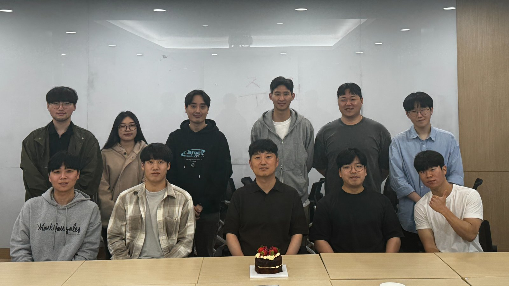
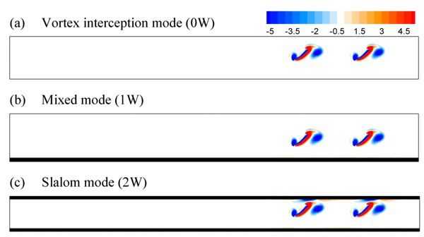
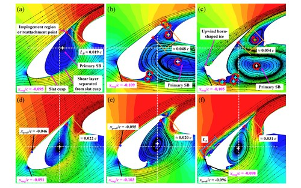
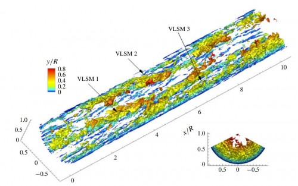
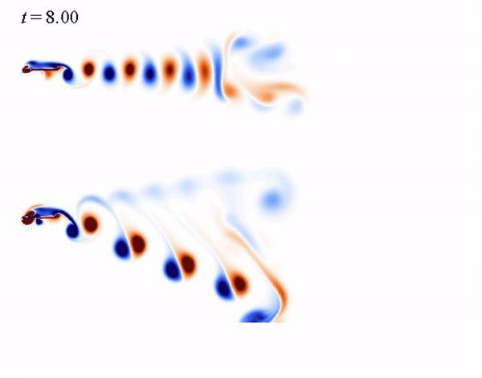
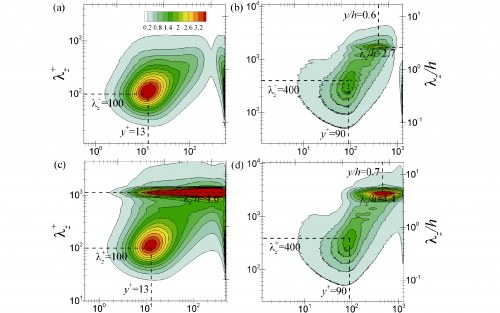
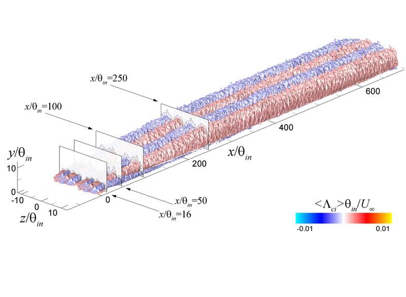

Control Laboratory
Understanding, predicting and controlling flows

About FPCL
About 25% of the total energy used in industry is known to spend in moving vehicles through air or water, or fluids along pipes and canals, and fluids can be a process carrier or material through which transport, separation and conversion processes occur. Thus, understanding of flows is of huge technological importance in aerodynamic and hydrodynamic applications.
In this aspect, we perform research on topics of energetic flows both ranging from fundamental to applied engineering to understanding, predicting and controlling flows. The research includes studies of turbulent flows with physical modeling, fluid-structure interaction problems and multi-phase flows with computational modeling, aiming at development of high-efficient energy-generating (or -saving) systems based on numerical simulations and experimental measurement (or visualization).
Research Highlights
-

Flow-mediated interactions between two self-propelled flexible fins near sidewalls
Young Dal Jeong, Jae Hwa Lee & Sung Goon Park
Journal of Fluid Mechanics, Vol. 913, A39, 2021 -

Large-eddy simulations of complex aerodynamic flows over multi-element iced airfoils
Young Mo Lee, Jae Hwa Lee, Lawrence Prince Raj, Je Hyun Jo & Rho shin Myong
Aerospace Science and Technology, Vol. 109, 106417, 2021 -

Space–time formation of very-large-scale motions in turbulent pipe flow
Jae Hwa Lee, Hyung Jin Sung & Ronald J. Adrian
Journal of Fluid Mechanics, Vol. 881, pp. 1010-1047, 2019 -

Wake transitions of flexible foils in a viscous uniform flow
Min Je Kim & Jae Hwa Lee
Physics of Fluids, Vol. 31, 111906, 2019 -

Direct numerical simulation of a turbulent Couette-Poiseuille flow with a rod-roughened wall
Young Mo Lee, Jung Hoon Kim & Jae Hwa Lee
Physics of Fluids, Vol. 30, 105101, 2018 -

Secondary flows in turbulent boundary layers over longitudinal surface roughness
Hyeon Gyu Hwang & Jae Hwa Lee
Physical Review Fluids, Vol. 3, 014608, 2018
Notice
[MS, PhD and Post-Doc Positions Available]
MS, PhD and post-doc positions are available in the lab. Person who is interested in pursuing the positions are encouraged to contact Prof. Lee (jhlee06@unist.ac.kr).